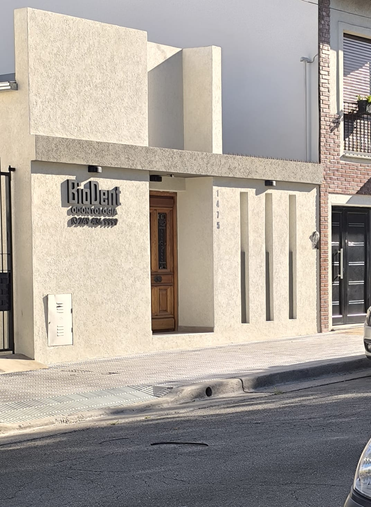
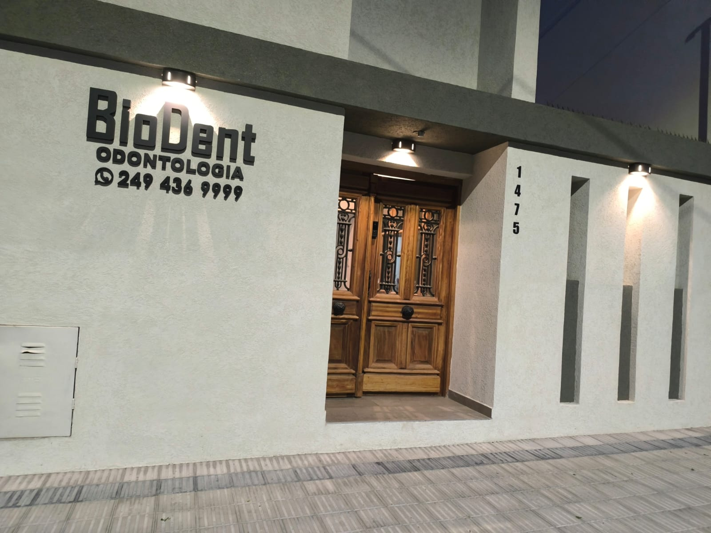
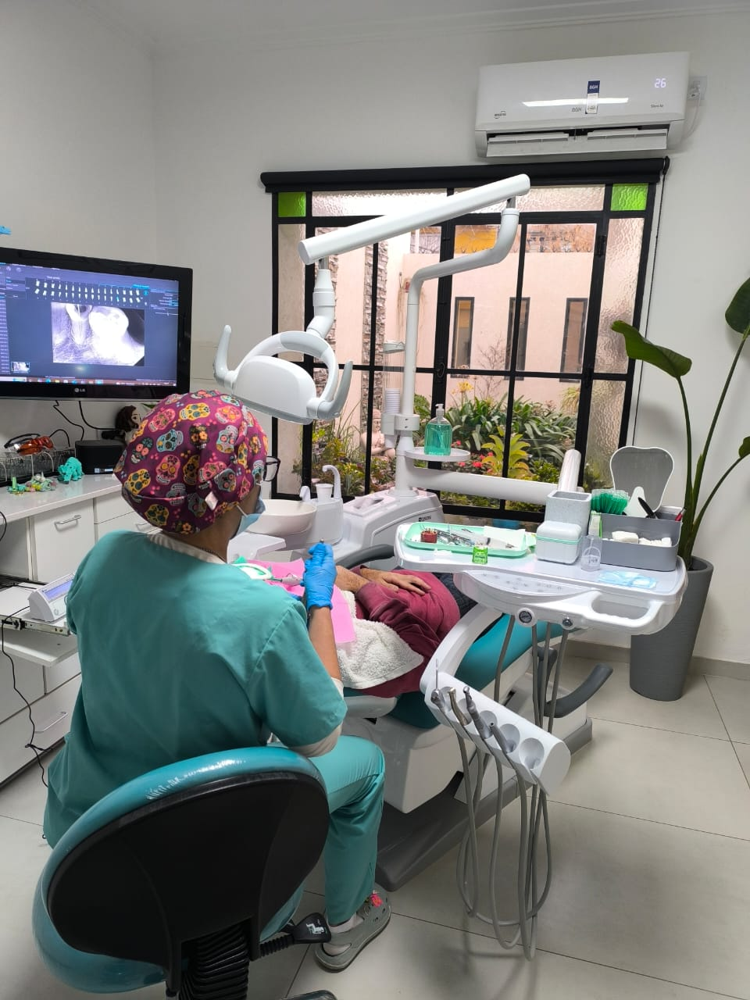

Odontología general
Atención de consultorio para pacientes de Tandil y visitantes de paso que buscan odontología general en una clínica ubicada en Montevideo 1475.

Montevideo 1475 · Tandil
La clínica de la Dra. Valeria Guzzanti reúne consultorio moderno, atención cálida y 39 reseñas con rating perfecto. Está en Montevideo 1475, Tandil, y el teléfono publicado es 0249 436-9999. Para coordinar una consulta o preguntar disponibilidad por urgencias dentales, llamá directo al consultorio.
Montevideo 1475
La dirección exacta es Montevideo 1475, Tandil. El frente claro, la puerta de madera y el cartel BioDent hacen que el consultorio sea reconocible desde la calle. Las imágenes disponibles muestran una entrada cuidada y un interior con luz natural, en línea con las reseñas que describen un espacio hermoso y luminoso.
El horario no está publicado en los datos verificados: para evitar esperas, lo correcto es llamar para coordinar turno. Esa llamada también sirve para confirmar si la consulta puede resolverse en el momento o si conviene pactar otra disponibilidad.
Atención odontológica
Atención de consultorio para pacientes de Tandil y visitantes de paso que buscan odontología general en una clínica ubicada en Montevideo 1475.
Las reseñas destacan el trato profesional, cercano y cuidadoso; Andrea Guadagnini menciona calidez, profesionalismo y un consultorio hermoso y luminoso.
La fachada y el interior acompañan la experiencia luminosa que mencionan los pacientes, con puerta de madera, cartel BioDent y sillón de atención visible en las imágenes.
Un paciente de viaje en Argentina relató una muy buena atención durante su paso por Tandil; además del público local, hay una reseña en inglés de un visitante.
El consultorio
Las fotos muestran el frente y el interior que encuentran los pacientes al llegar a Montevideo 1475. La fachada combina revestimiento claro, puerta de madera y cartel BioDent; el interior muestra equipamiento odontológico y luz natural.


Pacientes de la clínica
"El profesionalismo de la doc Valeria es inigualable, atención muy cálida, además el consultorio es hermoso y luminoso, gracias Doc Guzzanti!!!!"
"I was travelling in Argentina and a filling fell out and was causing me grief. I called this local dentist in Tandil and was surprised by the excellent treatment that I received there. The clinic is modern and the dentist was very gentle. The costs were very reasonable and I didn't even need to use my travel insurance. Would recommend them"
Pedir turno
El dato de horarios no está verificado. Para confirmar disponibilidad, comunicate por teléfono antes de acercarte. También podés usar la llamada para consultar el mejor momento para un turno y pedir orientación para llegar a Montevideo 1475.